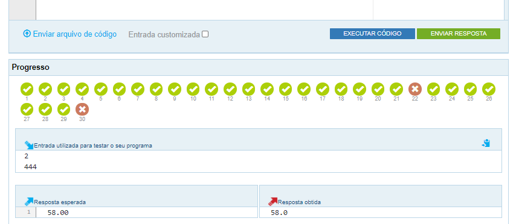

Atividade 6 - The Huxley
atividade da semana 6
Material de apoio para a disciplina Linguagem de Programação da UACSA/UFRPE
Produzido pelo prof. João Pimentel
Esta atividade é sobre repetição, assunto que é ensinado nas duas últimas lições da Semana 6:
- Repetição com for
- Exemplos com for
É recomendado começar pelo problema "N primeiros números naturais", que é o problema menos difícil desta Atividade.
Nenhum dos problema desta atividade precisa de arredondamento, então pode utilizar o print sem a função format.
Os números naturais são os números inteiros não-negativos. Exemplo: os 10 primeiros números naturais são: 0, 1, 2, 3, 4, 5, 6, 7, 8 e 9. Repare que o número 10 não está incluso nessa listagem.
Caso sua resposta não seja aceita, verifique se o último número impresso na tela está correto. No exemplo acima, o último número impresso deve ser o 9, e não o 10.
DICA: se lembre que podemos utilizar o % (módulo) para descobrir se um número é múltiplo de outro.
DICA: Se ligue que neste programa são precisos DOIS inputs, em vez de apenas 1.
Quando o Huxley diz que a resposta está errada quer dizer que, em alguns casos, o resultado do seu código não bateu com o gabarito. Se lembre de olhar a parte de baixo da tela para saber quais casos de teste estão errados e aperte nos X para ver se tem alguma dica disponível.
{kind=link}
Lembre-se de escolher a opção Python 3 quando for escrever a resposta no The Huxley.

Se lembre que o que irá aparecer na tela tem que ser exatamente igual à saída esperada, sem nada a mais nem a menos. Por exemplo, normalmente nós faríamos um programa que calcule o dobro de um número assim: